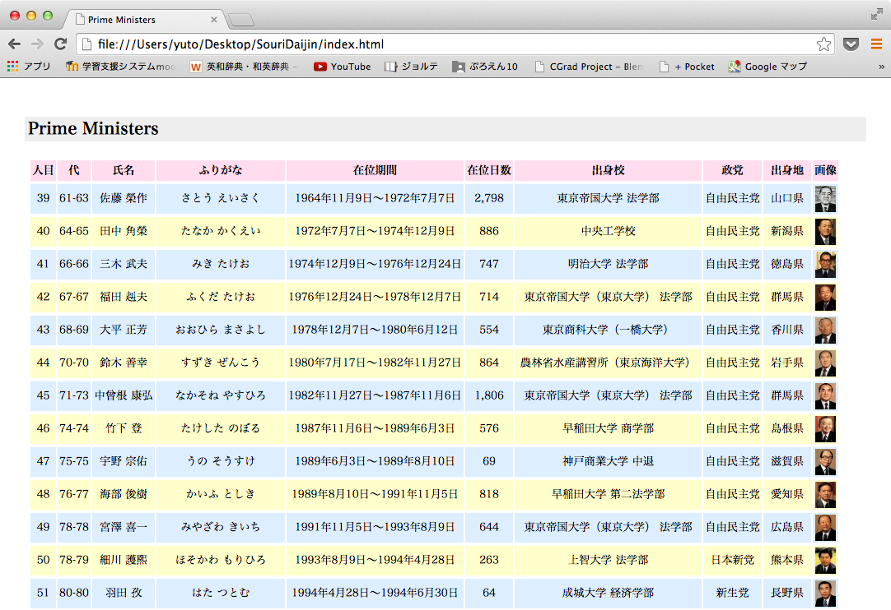
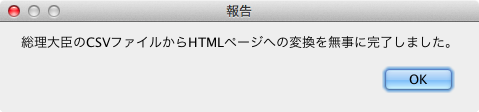
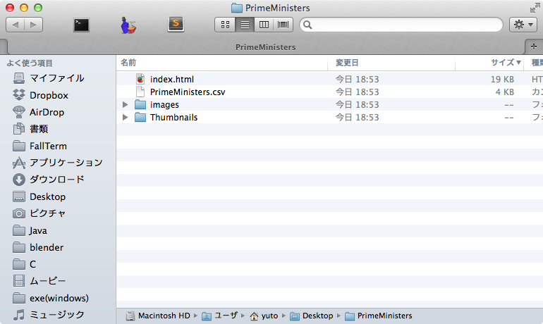

$ unzip PrimeMinistersByPython.zip
Archive: PrimeMinistersByPython.zip
creating: PrimeMinistersByPython/
inflating: PrimeMinistersByPython/.DS_Store
inflating: PrimeMinistersByPython/Makefile
inflating: PrimeMinistersByPython/MANIFEST
inflating: PrimeMinistersByPython/MANIFEST.in
creating: PrimeMinistersByPython/primeministers/
inflating: PrimeMinistersByPython/primeministers/.DS_Store
inflating: PrimeMinistersByPython/primeministers/__init__.py
inflating: PrimeMinistersByPython/primeministers/attributes.py
inflating: PrimeMinistersByPython/primeministers/downloader.py
inflating: PrimeMinistersByPython/primeministers/example.py
inflating: PrimeMinistersByPython/primeministers/io.py
inflating: PrimeMinistersByPython/primeministers/reader.py
inflating: PrimeMinistersByPython/primeministers/table.py
inflating: PrimeMinistersByPython/primeministers/translator.py
inflating: PrimeMinistersByPython/primeministers/tuple.py
inflating: PrimeMinistersByPython/primeministers/writer.py
creating: PrimeMinistersByPython/PrimeMinisters.app/
creating: PrimeMinistersByPython/PrimeMinisters.app/Contents/
inflating: PrimeMinistersByPython/PrimeMinisters.app/Contents/Info.plist
creating: PrimeMinistersByPython/PrimeMinisters.app/Contents/MacOS/
inflating: PrimeMinistersByPython/PrimeMinisters.app/Contents/MacOS/applet
extracting: PrimeMinistersByPython/PrimeMinisters.app/Contents/PkgInfo
creating: PrimeMinistersByPython/PrimeMinisters.app/Contents/Resources/
inflating: PrimeMinistersByPython/PrimeMinisters.app/Contents/Resources/applet.icns
inflating: PrimeMinistersByPython/PrimeMinisters.app/Contents/Resources/applet.rsrc
creating: PrimeMinistersByPython/PrimeMinisters.app/Contents/Resources/descriptiortfd/
inflating: PrimeMinistersByPython/PrimeMinisters.app/Contents/Resources/descriptiTXT.rtf
inflating: PrimeMinistersByPython/PrimeMinisters.app/Contents/Resources/JavaApp.icns
inflating: PrimeMinistersByPython/PrimeMinisters.app/Contents/Resources/PrimeMinisteicns
creating: PrimeMinistersByPython/PrimeMinisters.app/Contents/Resources/Scripts/
inflating: PrimeMinistersByPython/PrimeMinisters.app/Contents/Resources/Scripts/maiscpt
inflating: PrimeMinistersByPython/PrimeMinisters.py
inflating: PrimeMinistersByPython/README.txt
inflating: PrimeMinistersByPython/setup.py
Archive: PrimeMinistersByJava.zip
creating: PrimeMinistersByJava/
creating: PrimeMinistersByJava/PrimeMinisters.app/
creating: PrimeMinistersByJava/PrimeMinisters.app/Contents/
creating: PrimeMinistersByJava/PrimeMinisters.app/Contents/MacOS/
creating: PrimeMinistersByJava/PrimeMinisters.app/Contents/Resources/
creating: PrimeMinistersByJava/PrimeMinisters.app/Contents/Resources/Scripts/
creating: PrimeMinistersByJava/PrimeMinisters.app/Contents/Resources/description.rtfd/
creating: PrimeMinistersByJava/primeministers/
inflating: PrimeMinistersByJava/Makefile
inflating: PrimeMinistersByJava/PrimeMinisters.app/Contents/Info.plist
inflating: PrimeMinistersByJava/PrimeMinisters.app/Contents/MacOS/applet
inflating: PrimeMinistersByJava/PrimeMinisters.app/Contents/PkgInfo
inflating: PrimeMinistersByJava/PrimeMinisters.app/Contents/Resources/JavaApp.icns
inflating: PrimeMinistersByJava/PrimeMinisters.app/Contents/Resources/Scripts/main.scpt
inflating: PrimeMinistersByJava/PrimeMinisters.app/Contents/Resources/applet.icns
inflating: PrimeMinistersByJava/PrimeMinisters.app/Contents/Resources/applet.rsrc
inflating: PrimeMinistersByJava/PrimeMinisters.app/Contents/Resources/description.rtXT.rtf
inflating: PrimeMinistersByJava/PrimeMinisters.app/Icon
inflating: PrimeMinistersByJava/build.xml
inflating: PrimeMinistersByJava/primeministers.mf
inflating: PrimeMinistersByJava/primeministers/Attributes.java
inflating: PrimeMinistersByJava/primeministers/Downloader.java
inflating: PrimeMinistersByJava/primeministers/Example.java
inflating: PrimeMinistersByJava/primeministers/IO.java
inflating: PrimeMinistersByJava/primeministers/Reader.java
inflating: PrimeMinistersByJava/primeministers/Table.java
inflating: PrimeMinistersByJava/primeministers/Translator.java
inflating: PrimeMinistersByJava/primeministers/Tuple.java
inflating: PrimeMinistersByJava/primeministers/Writer.java
$ cd PrimeMinistersByPythone
$ ls *
MANIFEST Makefile README.txt
MANIFEST.in PrimeMinisters.py se
PrimeMinisters.app:
Co
primeministers:
__init__.py downloader.py io.py table.py tuple.py
attributes.py example.py reader.py translator.py writer.py
$ make
rm -rf ~/Desktop/PrimeMinisters
$ make install
if [ ! -e PrimeMinisters.app/Contents/Resources/Python/PrimeMinisters.app/ConteResourPython/ ; fi
cp -p -r PrimeMinisters.py primeministers PrimeMinisteResources/Python/
$ cd PrimeMinistersByJava
$ ls *
Makefile build.xml primeministers.mf
PrimeMinisters.app:
Contents Icon
primeministers:
Attributes.java Example.java Reader.java Translator.java Writer.java
Downloader.java IO.java Table.java Tuple.java
$ make
env LC_ALL=en ant all
Picked up _JAVA_OPTIONS: -Dfile.encoding=UTF-8
Buildfile: /Users/yuto/Desktop/PrimeMinistersByJava/build.xml
prepare:
[mkdir] Created dir: /Users/yuto/Desktop/PrimeMinistersByJava/Classes
[echo] on 2014/12/25 at 11:42:48
compile:
[javac] Compiling 9 source files to /Users/yuto/Desktop/PrimeMinistersByJava/Classes
[echo] on 2014/12/25 at 11:42:48
jar:
[jar] Building jar: /Users/yuto/Desktop/PrimeMinistersByJava/primeministers.jar
[echo] on 2014/12/25 at 11:42:48
all:
[echo] on 2014/12/25 at 11:42:48
BUILD SUCCESSFUL
Total time: 3 seconds
$ ls *
Makefile primeministers.jar
build.xml primeministers.mf
Classes:
primeministers
PrimeMinisters.app:
Contents Icon
primeministers:
Attributes.java Example.java Reader.java Translator.java Writer.java
Downloader.java IO.java Table.java Tuple.java
$ make install
env LC_ALL=en ant install
Picked up _JAVA_OPTIONS: -Dfile.encoding=UTF-8
Buildfile: /Users/yuto/Desktop/PrimeMinistersByJava/build.xml
prepare:
[echo] on 2014/12/25 at 11:47:04
compile:
[echo] on 2014/12/25 at 11:47:04
jar:
[echo] on 2014/12/25 at 11:47:04
all:
[echo] on 2014/12/25 at 11:47:04
install:
[copy] Copying 1 file to /Users/yuto/Desktop/PrimeMinistersByJava/PrimeMinisters.app/Contents/Resources/Java
[echo] on 2014/12/25 at 11:47:04
BUILD SUCCESSFUL
Total time: 0 seconds
実行するためのコマンドは以下の通りである。
Java version
java -jar primeministers.jar
Python version
make test
MAC OX Xの場合には、アプリケーションForest.appをダブルクリックする方が簡便である。
PrimeMinisters.app
また、openコマンドでPrimeMinisters.appを開いても実行可能である。
$ open PrimeMinisters.app
PrimeMinisters.appの実行例を以下に示す。
Pythonの場合、自動的にWebページが開くようになっています。

Javaの場合だと、このような表示が出ます。

少々手間ですが、OKを選択し、
Desktop下にこのようなディレクトリがあります。

index.htmlをWebブラウザで開くと、上記と同じようなWebページが表示されます。
{kind=link}
{kind=link}
{kind=link}